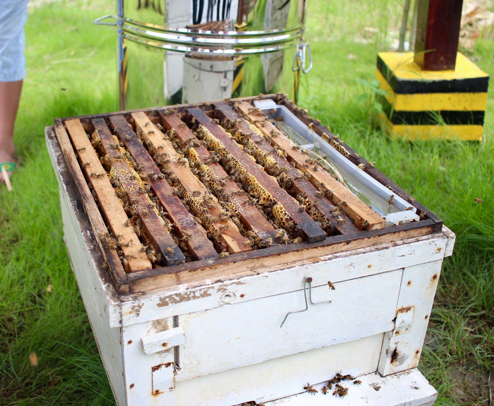

A YEAR IN THE APIARY - FEBRUARY
February marks a pivotal period in the apiary, signalling a shift from the cold clutches of winter to the early whispers of spring. February can still be quite chilly, focus on preparing your colonies for the forthcoming beekeeping season. As daylight hours extend, the queen bee increases her egg-laying, heralding a time of rejuvenation in the hive. This month is critical to ensure your bees are healthy and ready for the imminent nectar flow.
Monitoring Hive Activity: With the queen's escalated egg-laying, bees will actively forage for pollen and nectar on warmer days, a sign of a thriving colony. On days when temperatures rise above 8 degrees Celsius, a quick peek under the hive's roof, observing from the crown board, can reveal the colony's vigour. A lack of activity may indicate a weakened colony. See our hive management guide for observation tips.
Disease Inspection: If varroa mite levels were not adequately controlled the previous year, bees might be more vulnerable to viral infections. Watch for unusual behaviours like trembling or crawling, which could signal disease or infestation. Learn more in our disease and pest section or visit varroa management for specific strategies.
Monitor Food Stores: Regularly hefting the hive (without opening) is essential to monitor food reserves, especially after a harsh winter. Weak colonies may need supplementary feeding with fondant. Ensuring bees have enough sustenance is crucial for their survival until the spring nectar flow begins as bees will typically consume approximately 24lb (11Kg) of stores in February. Review our feeding and care guidance for more details.
Check for Mould: Check for mould growth within the hives, a common issue during damp conditions. Address any mould found to maintain a healthy environment for the bees.
Spring Preparation: Now is the time to plan for spring. As colonies expand rapidly, ensure you have adequate equipment, such as swarm control tools, super and brood boxes, and frames with foundation. Preparing or purchasing these items in advance sets you up for a successful spring season. Utilise the next few weeks to focus on feeding, swarm control and varroa management strategies. Visit our equipment page for what to have on hand.
Maintain Records: Keeping detailed records of hive health and activity over winter aids in making informed decisions about your colony's needs and adjustments. Learn how record-keeping supports seasonal planning.
Attend Educational Events: February is an opportune month to engage in beekeeping seminars or conferences. These events are valuable for learning new techniques and best practices. If you're just starting out, our beginner’s guide has great tips to help you prepare.
February in the apiary is a time of vigilant preparation and forward planning. By monitoring hive activity, inspecting for disease, managing food stores, preparing for spring, and engaging in educational opportunities, you can set your colonies on a path to a prosperous and healthy season.